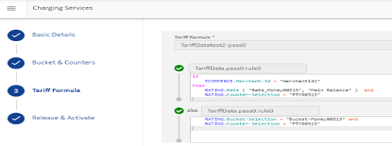
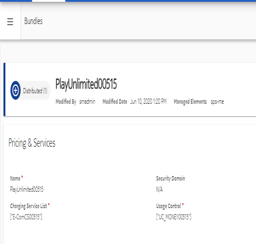
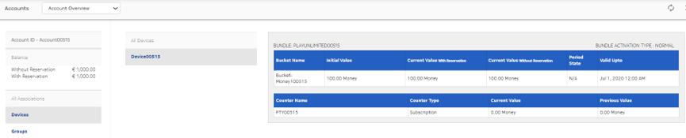
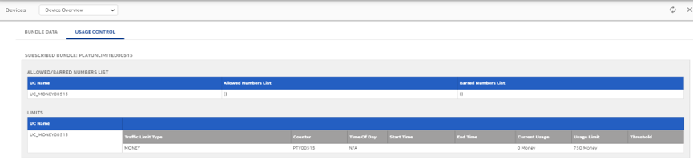
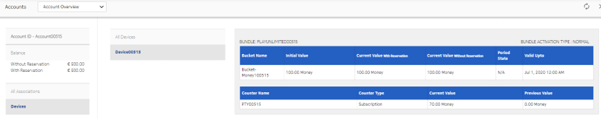
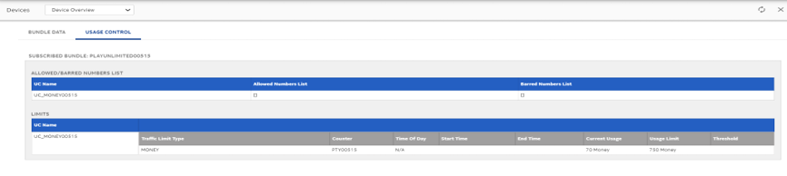
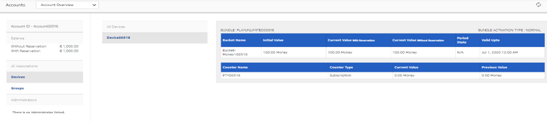
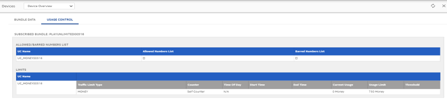
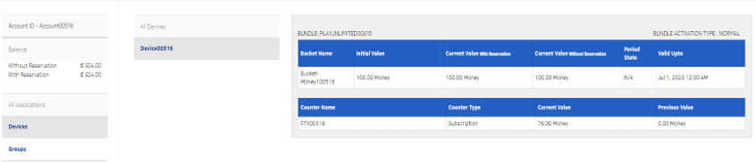
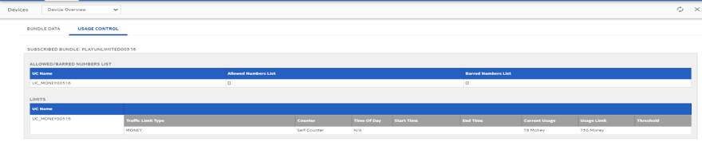

Consider the following examples for a better understanding of the eCommerce API
functionality:
Example 1: Usage limit override for reference counter attached in UC
Prerequisites:
-
Create a subscription-type counter PTY00515 with Usage
Limit set as 720 and Overage Limit set as
10 money with cost-type counter.
Create a charging service E-ComCS00515 with selecting the
above created counter and having tariff configured in such a way that charging is
done from account main balance when Merchant ID condition matches and counter
is incremented based on the deduction.
-
Create the Usage Control (UC) with reference counter as the counter created in
step 1 with Usage Limit set as
720.
Create a bundle PlayUnlimited00515 having the above charging
service and usage control.

-
Create an account and device through Account Profile API.
-
Set the account balance as 1000.
Figure: Account overview before running Direct Debit API

Figure: Device overview before running Direct Debit API

Execution:
-
Run the getUCRemaining balance API with GPSI as device
e164 and bundle_id as above created bundle in step
4.
-
Run the direct debit for the GPSI for amount 70.
This example verifies:
-
The getUCRemaining API returns the value of distancetoUsageAmount as
750 because usage limit is being overridden from counter usage
limit given in charging service.
-
Counter is incremented by 70 given in direct debit request and
account balance is deducted with the same amount (70) as given in
input request.
Figure: Account overview after running Direct Debit API

Figure: UC overview after running Direct Debit API

Example 2: Usage limit override for self-counter attached in UC
Prerequisites:
-
Create a subscription-type counter PTY00516 with Usage
Limit set as 720 and Overage Limit set as 10 money
with cost-type counter.
-
Create a charging service with selecting the above created counter and having
tariff configured in such a way that charging is done from account main balance when
Merchant ID condition matches and counter is incremented based on the
deduction.
-
Create the UC with self-counter and Usage Limit set as
720 having applicability condition is set as:
ECOMMERCE.Merchant-Id = "merchantid1"
-
Create a bundle PLAYUNLIMITED00516 having the above charging
service and UC.
-
Create an account and device through Account Profile API.
-
Set the account balance as 1000.
Figure: Account overview before running Direct Debit API

Figure: Device overview before running Direct Debit API

Execution:
-
Run the getUCRemaining balance API with GPSI as device
e164 and bundle_id as above created bundle in step
4.
-
Run the direct debit for the GPSI for amount 76.
This example verifies:
-
The getUCRemaining API returns the value of distancetoUsageAmount as
750 because usage limit is being overridden from counter usage
limit given in charging service.
-
Counter is incremented by 76 given in direct debit request and
account balance is deducted with the same amount (76) as given in
input request.
Figure: Account overview after running Direct Debit API

Figure: UC overview after running Direct Debit API

Example 3: eCommerce API behavior based on TOD defined in UC
The Usage Limit object in a UC is configured with the Time of
Day (TOD). Any eCommerce API request that is received during the configured TOD, are
rejected with an appropriate error code in response.

Note:
The Time of Server (ME) is considered while determining whether TOD is to be barred
or not.
Prerequisites:
-
Create a subscription-type counter having Usage Limit set as
720 and Overage Limit set as 10 Money
with cost-type counter.
-
Create a charging service with applicability condition as:
ECOMMERCE.Merchant-Id = "merchantid1"
-
Select the above created counter in this and tariff is configured in such a way
that balance is deducted from the account main balance and counter is incremented
based on the deduction.
-
Create the UC with self-counter with Usage Limit set as
750 and TOD given as day as TUESDAY and
provide some start time and end time.
-
Create a bundle having the above charging service and UC.
-
Create an account and device through Account Profile API.
-
Set the account balance as 1000.
Execution:
-
Run the getUCRemaining balance API with GPSI as device
e164 and bundle_id as above created bundle in step
4 at the time between start time and end time being configured in TOD
under UC.
-
Run the direct debit for the GPSI at the time between start time and end time being
configured in TOD under UC.
This example verifies: